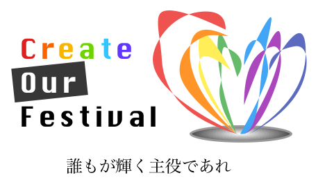
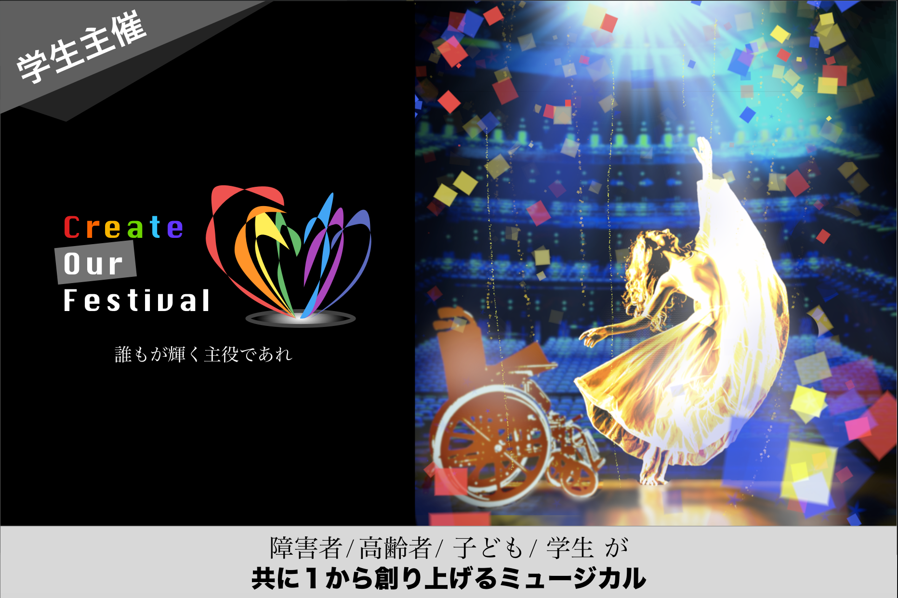

2020 / 12 / 26 up
Create Our Festival との仕事

こんにちは．
「障害者・高齢者・子ども・学生が1から創りあげるミュージカル」がコンセプトの団体で，メンバーは全員ホントに，障害者か，高齢者か，子供か，学生しかいません．
メンバーが分担して1から企画・構成・舞台設計・演技指導・会場・経費管理等々....何から何までやっちゃってるということです．しかも，主催者が現役大学生とのことで，同じ学生として見てて
マジですごいなぁと思うばかりです．
という感じですね．
始まりとしては，COFの企画に協賛した僕が，「何かできることはないか」と持ちかけ，「画像とかロゴって作れる？」と返ってきたので「いいですとも！」と二つ返事で返しました．
後からわかったことなんですが，デザインに精通した人員が周囲に全然いないらしく，すごく困っていたところだったそうです．
改めて，これほど熱量のある団体に，デザインという華を添えられる事を光栄に思います．

ここまで背景がしっかりしていれば，アイデアはゴリゴリ湧いてきます．
このようなタイプのデザインは初めてやりました．ポスターなんかは，「通りすがりの人が，ポスターに書いてあること全てを見てくれるわけではない」ということを意識しながら制作しました．

いかがだったでしょうか．
 はじめに
はじめに
こんにちは．
現在，私は，大阪堺のCreate Our Festival(以下：COF)というプロジェクトのデザイナーとして仕事しています．
今回は，COFとの仕事の内容と，具体的にどういうスケジュールを組んで仕事しているか紹介したいと思います．
Create Our Festivalとは
「障害者・高齢者・子ども・学生が1から創りあげるミュージカル」がコンセプトの団体で，メンバーは全員ホントに，障害者か，高齢者か，子供か，学生しかいません．
メンバーが分担して1から企画・構成・舞台設計・演技指導・会場・経費管理等々....何から何までやっちゃってるということです．しかも，主催者が現役大学生とのことで，同じ学生として見てて
マジですごいなぁと思うばかりです．
とにかく主催者とその周辺メンバーの熱量が結構すごくて
，その熱に僕が当てられちゃった結果，協力することになったわけですね．
次章から本題に入っていきますが，COFの意向で，障害者のことをあえて「障害者」と呼びます．不快な表現であることは承知の上ですが，何卒よろしくお願いいたします．
COFで何をしているか
COFは関西の団体です．東海地方に住んでいる僕と関西の彼らがLINEやGoogleアプリケーション等でやりとりしながら仕事しています． 現時点での，COFの想定スケジュールは，以下のようになってます．
| 2019/12/16 | 契約成立，仕事スタート |
|---|---|
| 2019/12/20 | COFのロゴ完成 |
| 2019/12/23 | COFの宣伝ポスター完成 |
| 2019/12/29 | COFのTwitter宣伝バナー完成 |
| 2019/1/10 | クラウドファンディングサイトのデザイン完成 |
| 2019/2/- | ここでも何かあるかも．．． |
| 2019/3/19 | 開演 |
始まりとしては，COFの企画に協賛した僕が，「何かできることはないか」と持ちかけ，「画像とかロゴって作れる？」と返ってきたので「いいですとも！」と二つ返事で返しました．
後からわかったことなんですが，デザインに精通した人員が周囲に全然いないらしく，すごく困っていたところだったそうです．